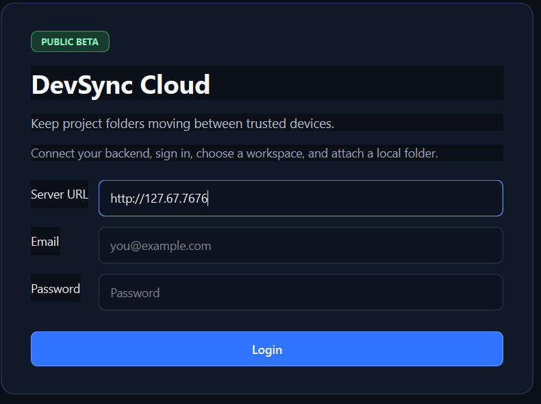
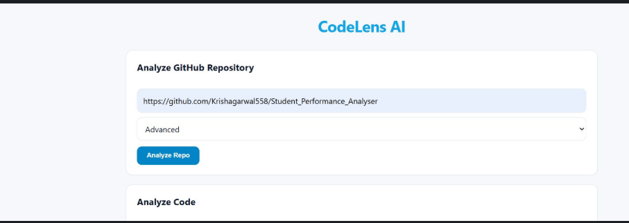
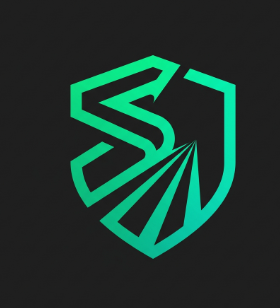
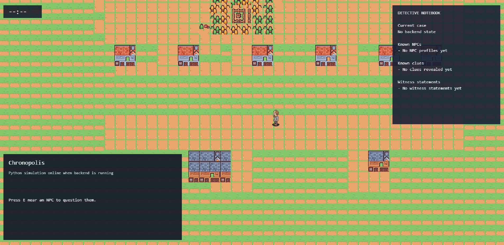
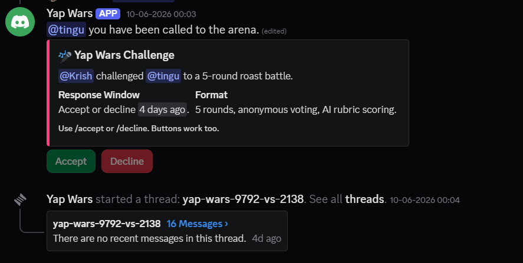

Languages
Python
C++
Java
C
JavaScript
TypeScript
SQL
SOFTWARE DEVELOPER • BUILDER
I design and build software across backend systems, AI tooling, developer infrastructure, and experimental products — turning ambitious ideas into reliable, working systems.
About Me
I'm a software developer who enjoys taking ideas apart, understanding how they work, and building them from the ground up. My work spans backend engineering, AI tooling, developer productivity, and systems development.
I like working close to the core of a product — designing APIs, structuring databases, integrating local AI models, building automation, and figuring out how different pieces of a system fit together. I'm equally interested in making things reliable under the hood and creating interfaces that feel simple on the surface.
Technical Skills
Featured Engineering
Core platforms, backend architectures, AI tooling, and safety intelligence systems built for performance and real-world utility.

A real-time workspace synchronization platform designed to eliminate the friction of repeatedly pushing and pulling code while collaborating across multiple devices.
A private, local-first Windows AI companion and deterministic project-management core powered by a local llama.cpp server. Runs completely offline without cloud API keys.

A developer-first code understanding and repository analysis layer that sits on top of any codebase to explain logic, suggest architectural improvements, and accelerate developer workflows.

An India-focused, retrofittable road-safety intelligence and driver-assistance prototype engineered in Python using CARLA 0.9.15 for high-fidelity simulation.
Creative, Games & Experiments
Game simulations, Discord community bots, interactive mechanics, and creative side builds.

A pixel-art detective simulation game featuring an explorable city map, dynamic NPC questioning flow, witness statement analysis, clue tracking, and an interactive in-game detective notebook.

An interactive Discord multiplayer mini-game where users face off in themed roast battles with timed rounds, anonymous crowd voting, AI-assisted content moderation, and competitive leaderboards.
A production-ready Discord member chatbot built with Node.js and Groq (Llama 3.3 70B). Behaves organically like a real human server member instead of a rigid command bot.
A top-down Wild West zombie survival game built with Unity, featuring modular enemy AI behaviors, wave-based combat scaling, and handcrafted tile-based world design.
GitHub Stats
Loading live GitHub data...
Freelance • Engineering • Collaboration
Need a modern website, a full-stack web application, high-throughput backend APIs, or custom automation pipelines? I'm available for freelance development, contract builds, and engineering roles.